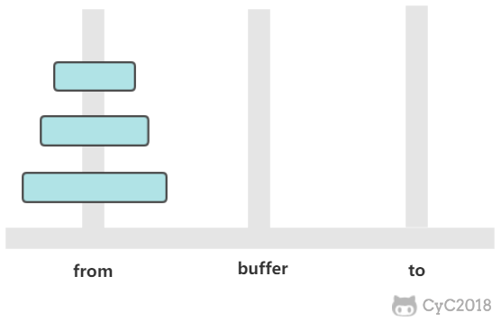
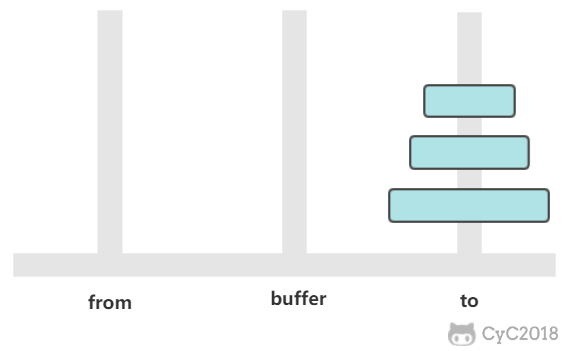

汉诺塔

有三个柱子，分别为 from、buffer、to。需要将 from 上的圆盘全部移动到 to 上，并且要保证小圆盘始终在大圆盘上。
这是一个经典的递归问题，分为三步求解：
① 将 n-1 个圆盘从 from -> buffer
② 将 1 个圆盘从 from -> to
③ 将 n-1 个圆盘从 buffer -> to

如果只有一个圆盘，那么只需要进行一次移动操作。
从上面的讨论可以知道，an = 2 * an-1 + 1，显然 an = 2n - 1，n 个圆盘需要移动 2n - 1 次。
1
2
3
4
5
6
7
8
9
10
11
12
13
14
15
| public class Hanoi {
public static void move(int n, String from, String buffer, String to) {
if (n == 1) {
System.out.println("from " + from + " to " + to);
return;
}
move(n - 1, from, to, buffer);
move(1, from, buffer, to);
move(n - 1, buffer, from, to);
}
public static void main(String[] args) {
Hanoi.move(3, "H1", "H2", "H3");
}
}
|
1
2
3
4
5
6
7
| from H1 to H3
from H1 to H2
from H3 to H2
from H1 to H3
from H2 to H1
from H2 to H3
from H1 to H3
|
哈夫曼编码
根据数据出现的频率对数据进行编码，从而压缩原始数据。
例如对于一个文本文件，其中各种字符出现的次数如下：
- a : 10
- b : 20
- c : 40
- d : 80
可以将每种字符转换成二进制编码，例如将 a 转换为 00，b 转换为 01，c 转换为 10，d 转换为 11。这是最简单的一种编码方式，没有考虑各个字符的权值（出现频率）。而哈夫曼编码采用了贪心策略，使出现频率最高的字符的编码最短，从而保证整体的编码长度最短。
首先生成一颗哈夫曼树，每次生成过程中选取频率最少的两个节点，生成一个新节点作为它们的父节点，并且新节点的频率为两个节点的和。选取频率最少的原因是，生成过程使得先选取的节点位于树的更低层，那么需要的编码长度更长，频率更少可以使得总编码长度更少。
生成编码时，从根节点出发，向左遍历则添加二进制位 0，向右则添加二进制位 1，直到遍历到叶子节点，叶子节点代表的字符的编码就是这个路径编码。

1
2
3
4
5
6
7
8
9
10
11
12
13
14
15
16
17
18
19
20
21
22
23
24
25
26
27
28
29
30
31
32
33
34
35
36
37
38
39
40
41
42
43
44
45
46
47
48
49
50
51
52
53
54
55
| public class Huffman {
private class Node implements Comparable<Node> {
char ch;
int freq;
boolean isLeaf;
Node left, right;
public Node(char ch, int freq) {
this.ch = ch;
this.freq = freq;
isLeaf = true;
}
public Node(Node left, Node right, int freq) {
this.left = left;
this.right = right;
this.freq = freq;
isLeaf = false;
}
@Override
public int compareTo(Node o) {
return this.freq - o.freq;
}
}
public Map<Character, String> encode(Map<Character, Integer> frequencyForChar) {
PriorityQueue<Node> priorityQueue = new PriorityQueue<>();
for (Character c : frequencyForChar.keySet()) {
priorityQueue.add(new Node(c, frequencyForChar.get(c)));
}
while (priorityQueue.size() != 1) {
Node node1 = priorityQueue.poll();
Node node2 = priorityQueue.poll();
priorityQueue.add(new Node(node1, node2, node1.freq + node2.freq));
}
return encode(priorityQueue.poll());
}
private Map<Character, String> encode(Node root) {
Map<Character, String> encodingForChar = new HashMap<>();
encode(root, "", encodingForChar);
return encodingForChar;
}
private void encode(Node node, String encoding, Map<Character, String> encodingForChar) {
if (node.isLeaf) {
encodingForChar.put(node.ch, encoding);
return;
}
encode(node.left, encoding + '0', encodingForChar);
encode(node.right, encoding + '1', encodingForChar);
}
}
|